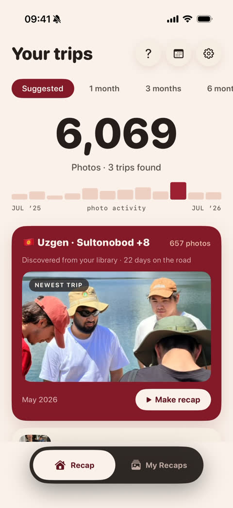
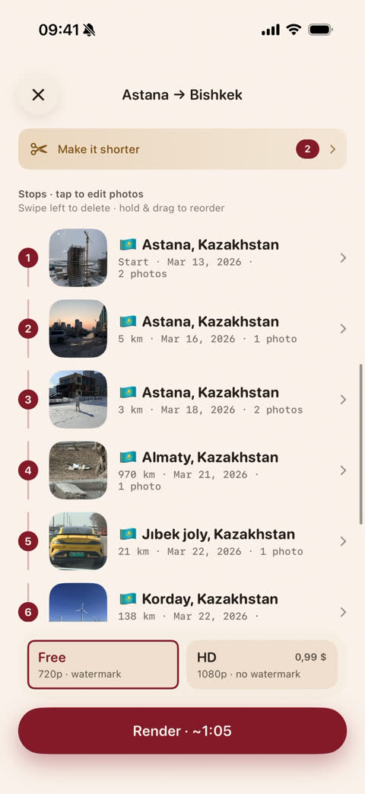
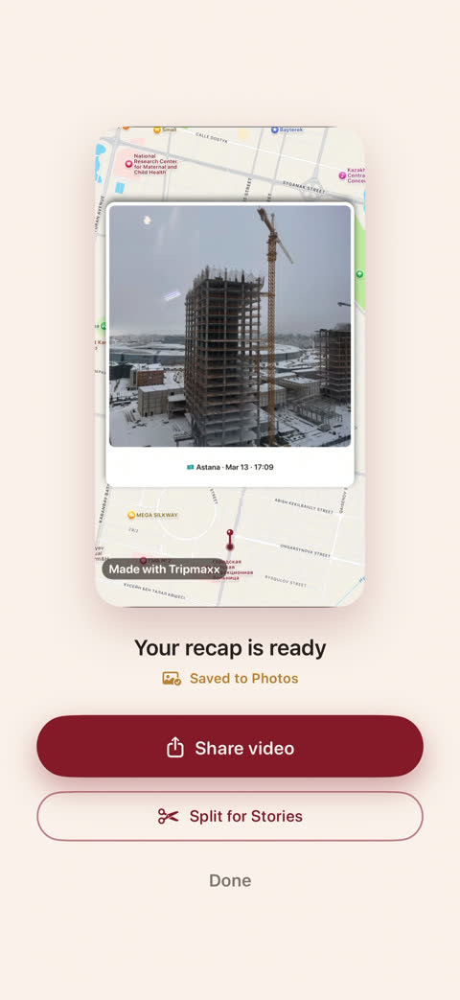
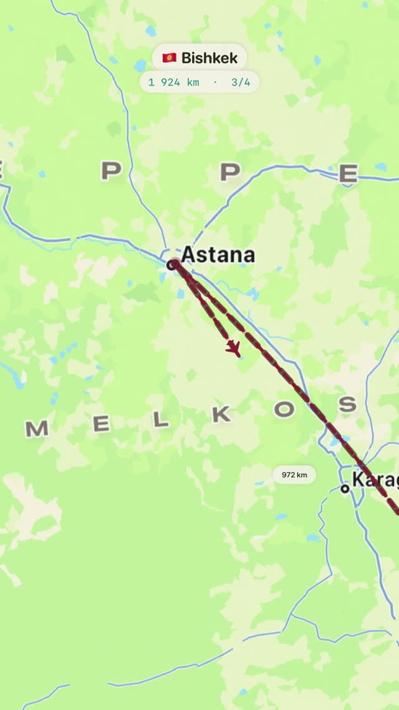

Your trip is already filmed
You just have to watch it. Tripmaxx reads the GPS in your photos, finds the trips you took and cuts them into a film with a map — no editing, no account, no subscription.
Download on the App StoreiOS 18+ · everything runs on your device
Three steps, and two of them are optional
Open the app, and the work is already done. Everything after that is you deciding how the film should look.
It finds the trips itself
Nothing to tag by hand. The GPS in your photos already knows where you were and how many days it took.

You stay the director
Every stop in one list: reorder, delete, swap the photos, or make the whole thing shorter. Or change nothing at all.

A film with a map
One tap, and the recap is in your Photos — 9:16 for Stories, 1:1 for the feed, 16:9 for YouTube.

The map isn't a screenshot
It draws your actual route — city after city, with kilometres and days, and your photos landing on the places where you took them.
Long trip? It splits itself into Stories-sized pieces.

Not a single photo leaves your phone
There is no server to send them to. Everything — the scan, the map, the rendering — happens on your iPhone.
- No account, no sign-up
- No cloud, no uploads
- No ads, no tracking
- Works in airplane mode
The recap is free
You pay only if you want the export in full quality. There is no subscription, and there won't be one.
Free
$0
The whole app. 720p export with a small watermark, as many recaps as you like.
HD export
$0.99
1080p, no watermark. Paid per export — nothing recurring.
Questions people actually ask
Do you upload my photos anywhere?
No. The app has no backend and no account. The only thing it ever downloads is map tiles — and that's a download, not an upload.
What if my photos have no GPS?
Then the trip can't be found automatically — but you can pick the photos yourself and build the film from them.
How long does it take?
Scanning a large camera roll takes about a minute, once. Rendering a recap is usually one to two minutes, and you can leave the app while it works.
Which iPhone do I need?
Any iPhone on iOS 18 or newer. Everything is rendered on the device, so a newer phone renders faster.
Is there an Android version?
Not yet. Tripmaxx is built on Apple's on-device frameworks, so today it's iPhone only.
Your first film, tonight
The trips are already in your camera roll. It takes one tap to watch them.
Download on the App Store